Tensi correlates your calendar, places, weather and body signals (HRV, sleep, heart rate), analysed on your iPhone and Apple Watch. We run no servers and never receive your data.
Analysed on-device No account required No ads, no trackers Works with Apple Watch
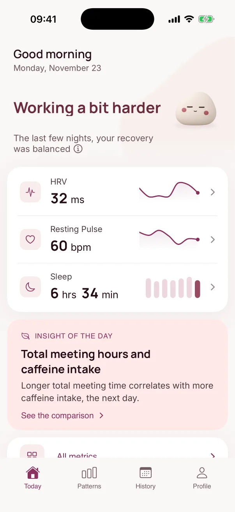
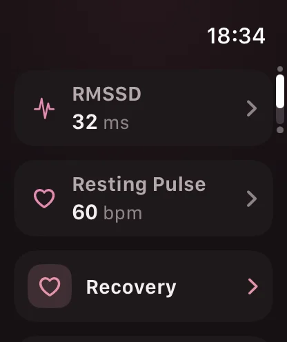
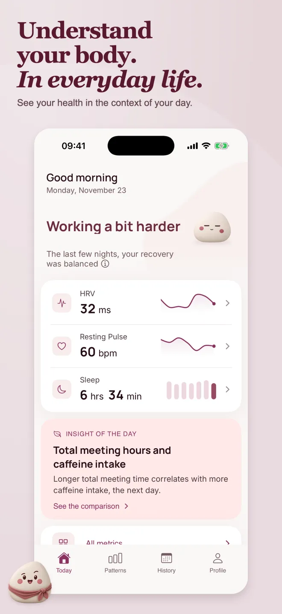
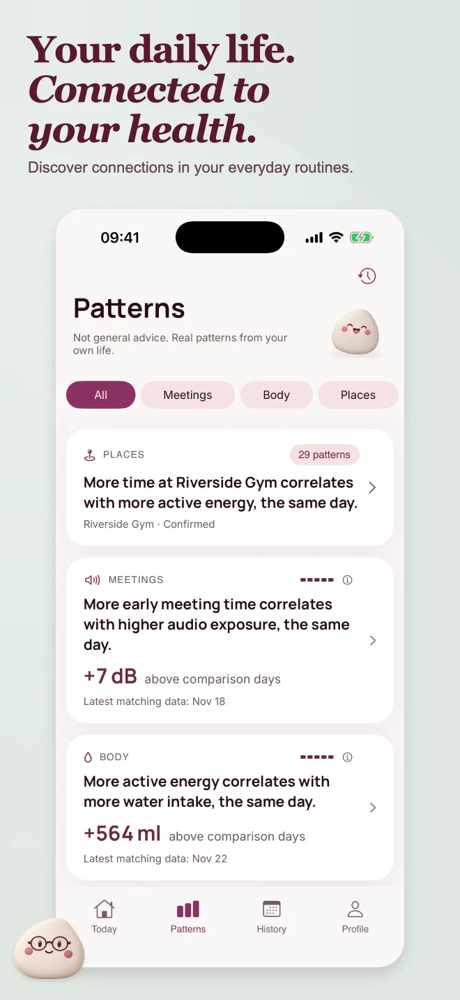
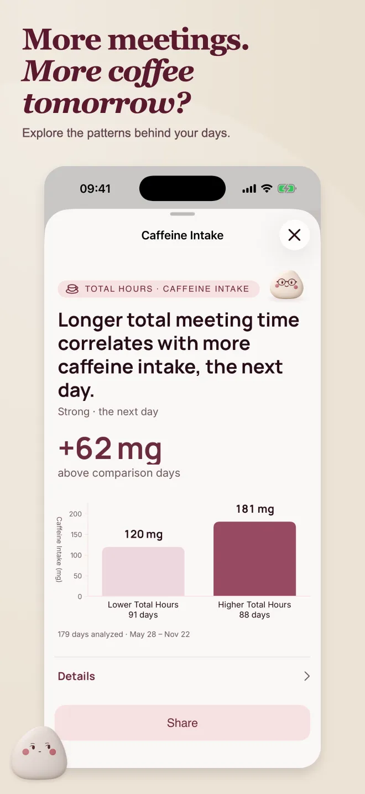
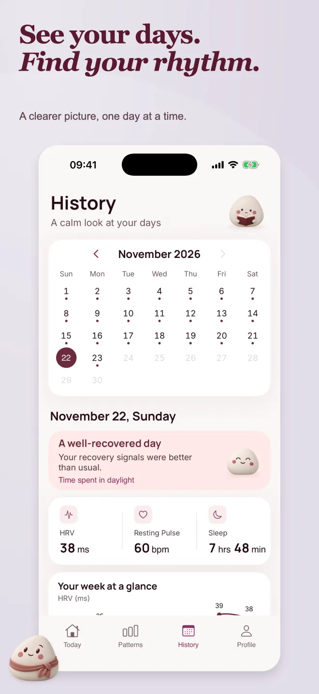
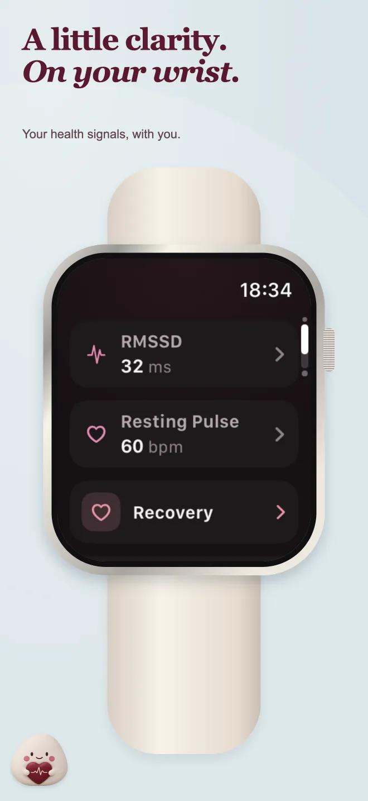
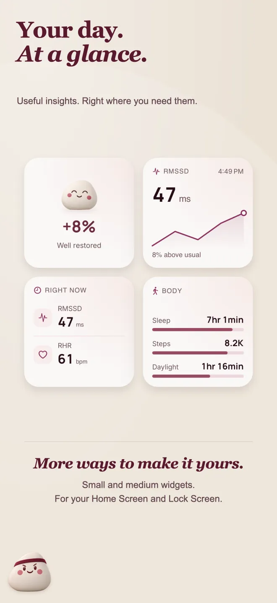
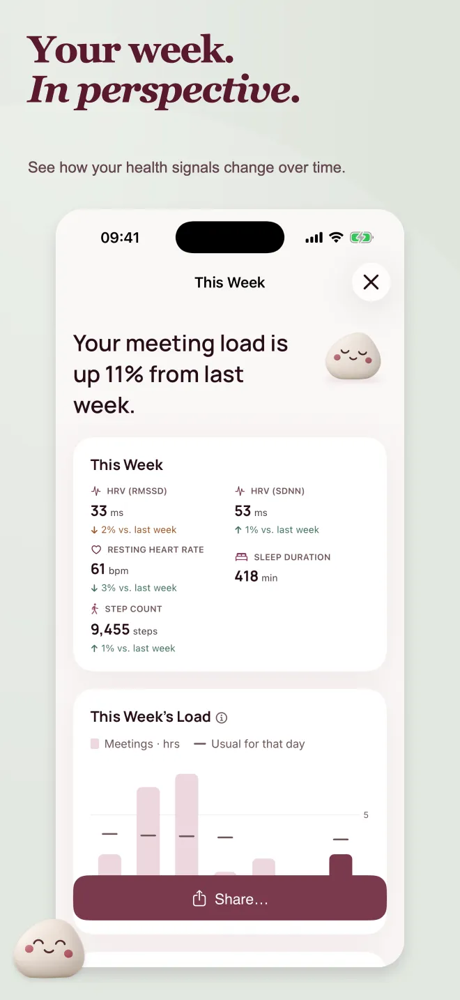
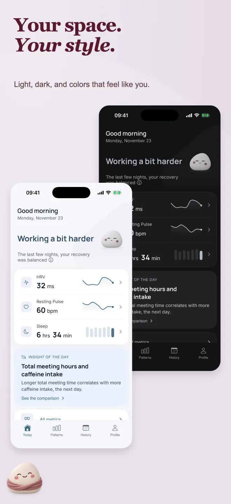
Tensi doesn't just show your numbers. It notices what they have in common with the rest of your life.
Tensi looks for real correlations (back-to-back meetings, a rainy week, a recurring place) against how your body actually responded.
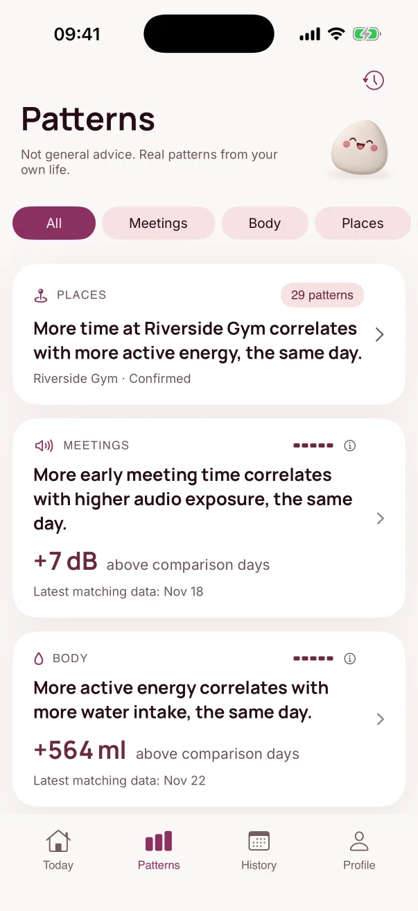
Each pattern shows which metric moved, which days were compared and how many there were. Labels say how reliable a finding is, so a coincidence is never dressed up as a fact.
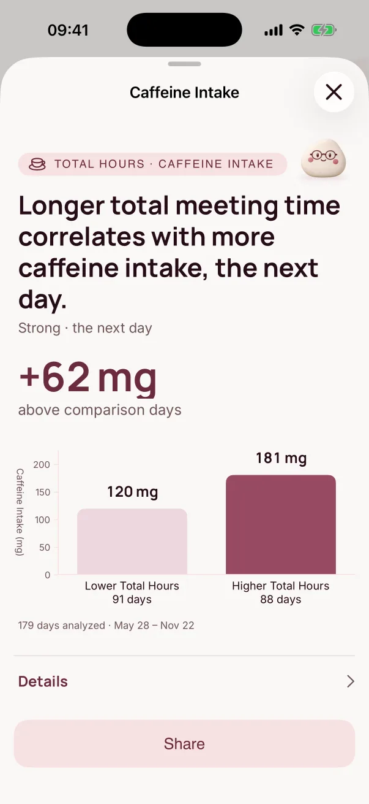
A recovery calendar so you can see, at a glance, which stretches asked the most of you and which let you recharge.
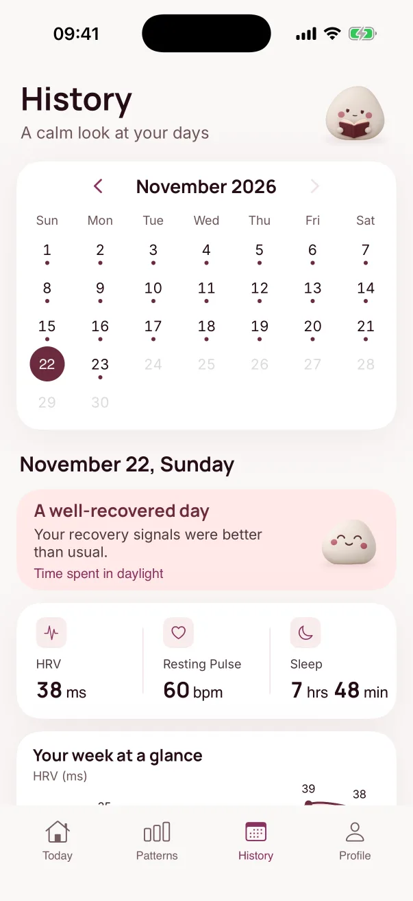
A short, honest summary of the week: trends worth knowing about, delivered without the clutter of a full dashboard.
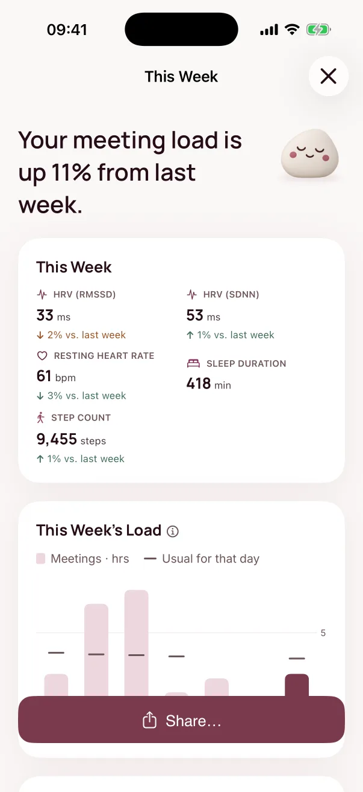
Sleep, activity, respiratory rate, cardio fitness and more, organized into one clear picture instead of scattered Health tiles.
A native watchOS companion with its own widgets and complications, so today's HRV trend is always one glance away.
Home Screen and Lock Screen widgets, plus Wine, Ocean and Graphite colour themes in light or dark.
Tensi was built with a simple rule: your health, location and calendar data never leave your device. Not to us, not to anyone.
Read the full Privacy Policy for details.
Today's vitals are free, always. Tensi Pro unlocks the full correlation engine.
Auto-renewable subscription, managed through your Apple ID. Cancel anytime in Settings.
Tensi is a stress and HRV (heart rate variability) tracker for iPhone and Apple Watch. It connects your calendar, the places you visit, the weather and your sleep with HRV and resting heart rate from Apple Health, so you can see which meetings, days and habits drain you and which help you recover. All analysis runs on your device, with no account and no server.
Download Tensi: Stress & HRV Tracker on the App Store
Yes. Tensi compares your calendar with heart rate variability and resting heart rate from your Apple Watch. Over time it shows patterns such as back-to-back meetings or long workdays that line up with lower HRV, so you can see which parts of your schedule cost you the most.
Tensi uses heart rate variability (HRV) and resting heart rate recorded by Apple Watch and stored in Apple Health. Lower HRV than your personal baseline usually signals more stress or less recovery. Tensi then looks for correlations with your calendar, places, weather and sleep.
Yes. Tensi has a native Apple Watch app with widgets and complications, so today's HRV trend is one glance away. It reads data through Apple Health on your iPhone.
Most HRV apps show your numbers. Tensi focuses on why they change: it correlates HRV with your calendar, locations and weather to surface the meetings, places and routines linked to stress and burnout.
Tensi is free to download, and today's HRV and resting heart rate are free forever. Tensi Pro ($1.99 per month or $11.90 per year) unlocks the full pattern engine, the recovery calendar and weekly reports.
Yes. Your health, calendar and location data stay on your iPhone. Tensi has no account and no server, so the developer never receives your data.